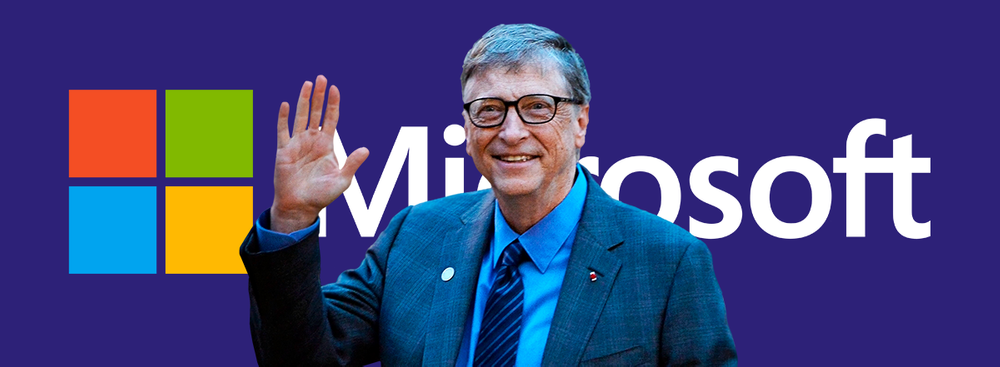

Bill Gates

.Sáng ngày 27 tháng Sáu năm 2008, như thường lệ, Bill Gates đến làm việc cả ngày trong văn phòng của ông tại Tập đoàn Microsoft, nơi giúp ông được cả thế giới biết đến với tư cách là nhà đồng sáng lập. Trong suốt 33 năm qua, Gates luôn đặt mọi sự quan tâm của bản thân cho Microsoft và ông đã đạt được những thành công rực rỡ đến khó tin. Ông là một trong những doanh chủ quyền lực và có tầm ảnh hưởng nhất trên thế giới. Nhưng kể từ buổi sáng hôm đó, ông đã thay đổi mục tiêu và cống hiến cả cuộc đời cùng khối tài sản khổng lồ của mình vào sự nghiệp nhân đạo và trở thành doanh chủ xã hội danh tiếng nhất thế giới.
Gates đã hai lần nỗ lực mang sự thay đổi đến với thế giới. Sau khi tham gia mở đường cho cuộc cách mạng máy tính đã làm thay đổi toàn bộ cách con người sống và làm việc, giờ đây ông tập trung toàn bộ sức mạnh để đối mặt với những thách thức dai dẳng nhất liên quan đến các vấn đề như y tế, giáo dục công và các cộng đồng thu nhập thấp. Với tư cách là đồng Chủ tịch Quỹ Bill và Melinda Gates – quỹ từ thiện nhân đạo lớn nhất từ trước đến nay, ông cam kết xóa bỏ căn bệnh bại liệt trên toàn thế giới và tiến tới xóa bỏ cả bệnh sốt rét.
Một trong những câu chuyện kinh doanh thành công nhất mọi thời đại được bắt đầu vào năm 1975. Vào một ngày nọ, Gates và anh bạn Paul Allen đang đi bộ ngang qua Quảng trường Harvard thì một tờ tạp chí trên sạp báo đã khiến cả hai phải ngoái nhìn. Đó là tờ Popular Electronics, số tháng Một với câu chuyện về một chiếc máy vi tính đời mới có tên gọi Altair 8800.
Gates và Allen quen nhau ở Trường Lakeside, một ngôi trường tư ở Seattle và nhận ra họ có chung niềm đam mê đối với máy tính. Từ khi học lớp tám, Gates đã bắt đầu tự lập trình vào những lúc rảnh rỗi. Sau đó, Gates trở thành sinh viên của Đại học Harvard, còn Allen gia nhập Công ty Honeywell tại Boston với vị trí nhân viên lập trình máy tính. Nhưng vì không muốn bỏ lỡ một ngã rẽ quan trọng trong lĩnh vực phát triển máy tính, đôi bạn đã quyết tâm hành động.
“Chúng tôi nghĩ tới chương trình phần mềm sẽ điều hành chiếc máy tính và hình dung tới cảnh câu chuyện đó xảy ra mà không có mình trong đó”, Gates nhớ lại. “Tất cả những gì chúng tôi biết là họ có thể có một số nhân viên thiết kế phần mềm và họ sắp sửa thực hiện công việc lập trình này.”
Hai người bạn nhanh chóng soạn một lá thư gửi tới hãng sản xuất máy tính ở Albuquerque, New Mexico, đề nghị được viết phần mềm cho chiếc máy vi tính Altair 8800. Gates kể rằng: “Chúng tôi không biết sẽ làm việc đó trong bao lâu. Dù vậy, trong thư, chúng tôi cứ thể hiện như thể mình đã có phần mềm đó rồi. Kể ra cũng khá hài hước. Chúng tôi đã phải làm việc suốt cả ngày lẫn đêm.”
Thực tế, đôi bạn không có chiếc máy tính Altair nào và cũng chưa từng viết một dòng lệnh nào cho nó. Giờ đây, họ phải dốc sức để tạo ra một phiên bản của ngôn ngữ máy tính BASIC – bản có thể làm việc trên chiếc máy tính đời mới. Vào buổi tối trước ngày Allen bay đến gặp gỡ khách hàng để trình bày về sản phẩm của hai người, Gates đã thức trắng đêm để kiểm tra chắc chắn rằng không một phần nào bị viết sai. Khi Allen trở về, họ không chỉ đạt được một hợp đồng bán phần mềm cho Công ty Micro Instrumentation and Telemetry Systems, mà Gates còn được họ mời về làm phó giám đốc chịu trách nhiệm về phát triển phần mềm. Thế là Gates nộp đơn xin thông báo vắng mặt ở trường và tạm ngưng việc học tại Đại học Harvard để đến Albuerque làm việc cùng với Allen vào tháng 11 năm 1975.
Họ đặt tên công ty của mình là “Micro-Soft” và một năm sau thì bỏ dấu gạch ngang ở giữa. Sau đó vào năm 1979, họ chuyển công ty tới Seattle. Cú rẽ quan trọng của cặp đôi này xảy ra vào năm 1980, khi IBM mắc phải một trong những sai lầm nghiêm trọng nhất trong lịch sử kinh doanh. Lúc đó, IBM chuẩn bị ra mắt một sản phẩm máy tính cá nhân và họ cho rằng phần cứng mới là phần giá trị nhất của chiếc máy. Vì vậy, IBM đã thuê Microsoft phát triển hệ điều hành cho sản phẩm mới của mình. Kỷ nguyên của máy tính cá nhân đã đến và Gates cùng với Allen đã giành được một trong những hợp đồng lớn nhất trong lịch sử. Đôi bạn đã đạt được một thỏa thuận quan trọng giữa Microsoft và IBM. Theo đó, IBM bị giới hạn khả năng cạnh tranh với Microsoft trong việc cung cấp bản quyền hệ điều hành MS-DOS tới các hãng sản xuất máy tính khác.
“Chúng tôi phải chắc chắn rằng chỉ chúng tôi mới được cấp phép bản quyền”, Gates nhớ lại. “Chúng tôi thực hiện thương vụ đó với giá khá thấp vì chúng tôi muốn quảng bá phần mềm này thông qua họ [IBM]. Bước tiếp theo, chúng tôi có thể tự phát triển vì các công ty khác chỉ có thể làm việc với chúng tôi nếu họ muốn có phần mềm này. Chúng tôi biết rằng hầu hết các sản phẩm tốt của IBM thường được sản xuất hàng loạt. Vì vậy không khó để nhận ra điều tất yếu là rốt cuộc chúng tôi sẽ có thể cấp quyền sử dụng DOS cho nhiều người khác nữa. Chúng tôi hiểu rằng, nếu muốn kiếm thật nhiều tiền với DOS, số tiền đó sẽ đến từ những người dùng, chứ không phải là IBM.”
Đó là một cú đánh tuyệt vời khiến cho IBM rơi vào thế thua thiệt và đặt nền tảng cho thành công rực rỡ của Microsoft. Sai lầm của IBM đã giúp Gates phát triển công ty từ một doanh nghiệp khởi nghiệp “nhỏ bé” trở thành một trong những công ty sản xuất phần mềm lớn nhất thế giới với tổng trị giá lên tới 400 tỷ đô-la Mỹ ở thời kỳ đỉnh cao. Trong hàng loạt thành tựu của Microsoft, hai sản phẩm chủ chốt của họ là hệ điều hành Windows và phần mềm Microsoft Office, cũng là hai sản phẩm duy nhất trên thế giới có hơn một tỷ người dùng.
Khi Gates đã sở hữu một khối tài sản khổng lồ – có những thời điểm doanh chủ này là người giàu nhất thế giới, ông bắt đầu nghiên cứu sự nghiệp của Andrew Carnegie và John D. Rockerfeller. Năm 1994, ông bán một số cổ phần của mình ở công ty để thành lập quỹ từ thiện. Từ đây, ông bắt đầu sự nghiệp thứ hai của mình và biến nó thành một trong những câu chuyện đổi nghề vĩ đại nhất trong lịch sử.
Về công thức bí mật của Microsoft
Chìa khóa đầu tiên của chúng tôi là luôn tuyển dụng những người cực kỳ thông minh. Không có cách nào để tránh khỏi việc này: bạn phải chọn những người có đủ trình độ IQ để viết phần mềm. 95% trong số chúng ta không nên cố gắng viết ra những phần mềm phức tạp. Việc chỉ sử dụng các đội ít người cũng có rất nhiều lợi ích.
Bạn phải cung cấp cho các nhóm nhỏ này những công cụ tốt nhất. Hãy chọn những người tài giỏi, để họ làm việc theo nhóm nhỏ và trao cho họ những công cụ hoàn hảo: công nghệ tổng hợp dữ liệu, công nghệ sửa lỗi, cũng như trang bị những máy móc với công nghệ tân tiến nhất để họ có thể tối đa hóa năng suất làm việc. Hãy nói rõ rằng họ được phép thay đổi các thông số của sản phẩm. Hãy cho họ thấy rằng họ có nhiều quyền kiểm soát trong vấn đề này.
Hãy để nhiều người đọc các đoạn mã để tránh trường hợp bạn phụ thuộc vào một người duy nhất – những người cố tình che giấu sự thật là họ không thể giải quyết được vấn đề.
Hãy quan tâm đến yếu tố thiết kế ngay từ đầu. Điều này đã giúp ích cho chúng tôi rất nhiều, ngay cả khi các nhóm dự án ngày càng đông hơn và công ty phát triển lớn hơn rất nhiều so với trước đây. Đừng sử dụng phương pháp làm việc với hàng tá các loại giấy tờ khác nhau. Mã nguồn mới là nơi bạn cần đặt hết mọi suy nghĩ vào đó, chứ không phải bất kỳ nơi nào khác. Vì vậy, các mã nguồn của chúng tôi luôn được đánh giá rất kỹ theo một cách có hệ thống, trừ một số rất ít các trường hợp ngoại lệ.
Về sự thay đổi
Trong lĩnh vực công nghệ, chúng tôi luôn hiểu rằng mọi người thường đánh giá quá cao những thay đổi diễn ra trong vòng một đến hai năm và đánh giá thấp các thay đổi có tác động lâu dài cần khoảng thời gian từ mười hay mười lăm năm. Chúng tôi cũng phải chịu sự tác động của các chu kỳ lạc quan quá mức rồi lại bi quan này. Những năm cuối thập niên 1990 là một giai đoạn điên rồ, khi các công ty khởi nghiệp trở thành trào lưu thay thế các ngân hàng và cửa hàng bán lẻ. Mọi người quên hết những lợi ích khi vận hành các doanh nghiệp theo những cách thông thường và họ cũng quên mất giá trị kinh tế của các phương thức truyền thống đó. Trong bất kỳ lĩnh vực nào, khi mức sàn để gia nhập một sân chơi quá thấp, công việc tạo dựng giá trị sẽ trở nên khó khăn hơn. Vì vậy, chỉ một số rất ít các công ty khởi nghiệp kia phát triển được đến một quy mô đáng kể và làm được những điều đáng chú ý.
Thời điểm đó đã có những thương vụ đầu tư cực lớn, giống như trong một cơn sốt vàng vậy. Một số người đã thua lỗ, nhưng đó là bản chất của chủ nghĩa tư bản – nó cân nhắc những ý tưởng mới mẻ và hỗ trợ cho những ý tưởng hiệu quả. Vì vậy, để đưa ra một kết luận cuối cùng, tôi sẽ nói đó là một giai đoạn đầy ắp sự đổi mới.
Sau đó là sự kiện vỡ bong bóng công nghệ (bong bóng dot-com). Một số người chuyển hẳn sang kiểu suy nghĩ cực đoan cho rằng những sự thay đổi này không hề có thực và đó chỉ là một cơn sốt ảo. Nhưng khái niệm “cơn sốt ảo” chỉ đúng nếu xét ở góc độ thời gian. Một số ý tưởng trong giai đoạn đó không được suy nghĩ thấu đáo. Thậm chí, một số nền tảng công nghệ cần thiết còn chưa tồn tại ở thời điểm đó.
Về tinh thần khởi nghiệp
Việc thành lập một doanh nghiệp đòi hỏi rất nhiều năng lượng nên hãy chắc chắn rằng bạn có thể vượt qua được nỗi sợ khi đối mặt với các rủi ro. Tôi không cho rằng bạn phải mở công ty ngay khi mới bắt đầu sự nghiệp. Có rất nhiều thứ bạn có thể học được khi đi làm cho một doanh nghiệp và bạn có thể học hỏi xem họ đã bắt đầu như thế nào. Trong trường hợp của chúng tôi, Paul Allen và tôi lo ngại rằng có ai đó sẽ bắt đầu trước mình. Trong thực tế, chúng tôi đã có thể chờ một năm nữa vì ban đầu, mọi thứ diễn ra còn khá chậm. Tuy nhiên, việc bắt tay làm ngay có ý nghĩa rất quan trọng với chúng tôi.
Nếu bạn còn trẻ, bạn sẽ không dễ dàng thuê văn phòng trong những tòa nhà sang trọng. Bạn cũng không thể thuê xe hơi khi bạn chưa đủ 25 tuổi. Tôi luôn bắt taxi đi gặp khách hàng. Khi mọi người mời tôi đến quán bar để nói chuyện, tôi cũng không thể đến những nơi đó được.
Chuyện đó khá hài hước vì mọi người lúc đầu đều tỏ vẻ hoài nghi. Họ cho rằng: “Nhóc con này chẳng biết gì hết.” Nhưng khi bạn cho họ thấy bạn có một sản phẩm thực sự tốt và bạn hiểu vấn đề, họ sẽ trở nên cực kỳ hứng thú. Ít nhất thì ở đất nước này, một khi chúng ta đã đạt được đến một ngưỡng nào đó, sức trẻ sẽ là một tài sản lớn.
Về sự cạnh tranh trong kinh doanh công nghệ
Lĩnh vực kinh doanh công nghệ thường có rất nhiều biến động. Đây có lẽ là một lĩnh vực thú vị vì không có một công ty nào có thể tự thỏa mãn với thành công của mình. IBM là một công ty có tầm ảnh hưởng cực lớn mà không doanh nghiệp nào có thể có được trong lĩnh vực công nghệ, nhưng họ vẫn lỡ mất một số cơ hội. Mỗi ngày, khi tỉnh dậy, bạn sẽ nghĩ: “Mình phải cố gắng để không lỡ mất cơ hội nào. Phải tìm hiểu xem chuyện gì đang diễn ra đối với công nghệ nhận diện giọng nói hay trí tuệ nhân tạo. Chúng ta phải thuê được những người có khả năng hoàn thiện công việc và không được phép để cho bản thân bị bất ngờ.”
Nhưng đôi khi chúng tôi vẫn bị bất ngờ. Ví dụ, khi Internet xuất hiện, nó chỉ là ưu tiên thứ năm hay thứ sáu của chúng tôi thôi. Dĩ nhiên là không đến mức tôi không biết phát âm từ “Internet” như thế nào. Tôi đã nói với mọi người: “Internet nằm trong danh sách của tôi rồi, mọi chuyện sẽ ổn thôi.” Nhưng rồi đến một lúc chúng tôi nhận ra nó phát triển ngày càng nhanh và là một hiện tượng lớn hơn rất nhiều so với những gì chúng tôi đã phân tích trong bản chiến lược của mình. Vì vậy, với tư cách là người lãnh đạo, tôi phải giúp mọi người hiểu rằng đang có một cuộc khủng hoảng trong công ty. Vậy là chúng tôi đã có những buổi họp riêng về vấn đề này. Cuối cùng, một bản chiến lược mới ra đời và chúng tôi nói: “Vâng. Đây là những việc chúng ta sẽ làm; chúng ta sẽ đánh giá năng lực nội bộ như thế này và chúng ta muốn thế giới nghĩ về những việc chúng ta sẽ làm.”
Những khủng hoảng kiểu như thế sẽ xuất hiện ba, bốn năm một lần. Bạn phải lắng nghe ý kiến của tất cả những nhân sự tài giỏi trong công ty. Đó là lý do vì sao chúng tôi cần tuyển dụng nhiều người với những cách nghĩ khác nhau. Chúng tôi chấp nhận sự khác biệt và trái ngược về quan điểm. Chúng tôi phải nhận ra những ý tưởng đúng đắn và đầu tư nguồn lực thật sự vào đó.
Về những quyết định kinh doanh tốt nhất
Tôi phải khẳng định rằng những quyết định kinh doanh tốt nhất của tôi nằm ở việc chọn người. Quyết định hợp tác với Paul Allen chính là quyết định sáng suốt nhất, tiếp theo đó là tuyển dụng một người bạn – Steve Ballmer – người đã trở thành đối tác quan trọng nhất của tôi từ đó đến nay. Bạn cần một người mà bạn có thể hoàn toàn tin cậy. Họ gắn bó với bạn, chia sẻ tầm nhìn cùng bạn và có những kỹ năng khác với những gì bạn có, đồng thời sẽ là người giúp bạn kiểm tra mọi thứ. Khi bạn trình bày một số ý tưởng với anh ấy, bạn biết chắc chắn anh ta sẽ hỏi bạn: “Này, đợi một chút, anh đã nghĩ đến điều này, điều kia chưa?” Lợi ích của việc có một người tuyệt vời như thế ở bên không chỉ là giúp việc kinh doanh trở nên thú vị hơn mà thực sự sẽ giúp bạn có được nhiều thành công hơn.
Về những sai lầm
Khi bạn thực hiện một sản phẩm chậm hơn so với dự kiến, đó là một sai sót. Chúng tôi đúng ra đã nên suy nghĩ nghiêm túc về công cụ tìm kiếm trên Internet sớm hơn bốn năm. Trong ngành này, nếu bạn nhanh nhạy thì mọi việc sẽ ổn. Chúng tôi đã nhanh chân trong dịch vụ truyền hình Internet. Chúng tôi cũng nhanh chân với máy tính bảng. Sau đó, chúng tôi chỉ cần tiếp tục cải thiện sản phẩm rồi chờ tới khi tất cả các xu hướng hội tụ và tạo ra một hiện tượng lớn. Nếu bạn chậm chân, tất cả sẽ chỉ tập trung chú ý vào những người đang dẫn đầu trong hiện tượng đó. Bạn phải tìm kiếm những chuyển đổi trong mô hình một sự chuyển đổi đáng kể và góp phần vào thay đổi đó. Chúng tôi đã đôi lần đánh mất các cơ hội. Bạn có kể ra những sai lầm lớn nhất của chúng tôi nhưng thật sự thì danh sách này dài vô cùng.
Chúng tôi đã đi sai nhiều bước trong những ngày đầu tiên. Vì chúng tôi khởi đầu khá sớm, điều đó đồng nghĩa với việc chúng tôi phải mắc sai lầm nhiều hơn những người khác. Có những khách hàng phá sản và họ không trả tiền cho chúng tôi. Có những khách hàng mà chúng tôi tiêu tốn rất nhiều thời gian cho họ nhưng họ chưa bao giờ phát triển các thiết bị dựa trên nền tảng vi tính cả.
Về quảng cáo bán lẻ, chúng tôi cũng mắc những sai lầm và đó là những bài học quan trọng đối với chúng tôi. Chúng tôi có đại lý ở một số quốc gia. Thật sự chúng tôi không muốn sử dụng đại lý. Bạn muốn sử dụng người của mình. Nếu bạn là một doanh nghiệp thực sự, hãy sử dụng những cách tiếp cận dài hạn. Khi có mặt ở bất kỳ quốc gia nào, hãy tuyển người ở đó và hãy chắc chắn rằng họ ở đó để giúp bạn xây dựng những mối quan hệ bền vững chứ không chỉ kiếm những khoản hoa hồng ngắn hạn. Chúng tôi đã nhanh chóng rút ra bài học này.
Chúng tôi đã tuyển những người làm kinh doanh rất sắc bén và họ đã chia sẻ kinh nghiệm với chúng tôi. Như vậy, chúng tôi không chỉ có những người chỉ biết làm công nghệ. Thời đó, chúng tôi còn rất trẻ. Tôi vừa hỗ trợ Steve Ballmer chuyện kinh doanh, vừa phụ Paul Allen phụ trách mảng công nghệ. Chúng tôi đã rất lạc quan, cho rằng chúng tôi sẽ làm mọi việc nhanh hơn so với thực tế. Khi bạn đang thực hiện một dự án, bạn luôn cảm thấy đó là một dự án vô cùng thú vị. Có một vài dự án không thực sự sinh lời. Nhưng tất cả đều có thể sửa chữa được nếu chúng ta nhận ra điều đó và nhìn lại những kết quả mình đã thu được.
Về việc thiết lập môi trường làm việc
Tôi luôn cho rằng môi trường tạo ra sự phát triển phải là một môi trường vui vẻ, giống như ký túc xá của một trường đại học vậy. Nếu bạn sử dụng các nhóm nhỏ, bạn cần trao cho họ các công cụ, thật nhiều máy tính, văn phòng riêng và tất cả những gì họ cần để có thể tập trung vào công việc và thật sự sáng tạo. Không gian sống ở vùng Tây Bắc nước Mỹ thường có rất nhiều cây xanh xung quanh; những tòa nhà chỉ có một, hai hay ba tầng với các văn phòng có diện tích rất vừa vặn. Tôi thấy khu vực đó rất phù hợp. Từ khi chuyển tới Seattle, chúng tôi luôn tìm kiếm một mảnh đất không quá xa nhưng phải đủ rộng để chúng tôi xây dựng một công ty. Tới năm 1986, chúng tôi chuyển vào khu phức hợp công ty của mình.
Ban đầu, chúng tôi có bốn tòa nhà xoay mặt vào một hồ nước. Mỗi một nhóm phát triển chính có một tòa nhà riêng. Chúng tôi thực sự có được môi trường tối ưu. Mọi người đều cảm thấy đó là một môi trường làm việc vui vẻ. Chúng tôi không chỉ làm việc cùng mà còn rất gần gũi với nhau. Mọi người đi bộ hoặc chạy những chiếc xe đạp một bánh quanh công ty, ăn tiệc nướng ngoài trời và tổ chức những cuộc họp đứng rất thoải mái.
Về việc trở thành công ty đại chúng
Microsoft bắt đầu áp dụng quyền mua cổ phiếu từ đầu năm 1981. Chúng tôi muốn chia sẻ sự thành công mà chúng tôi biết mình sẽ đạt được. Theo cách làm của chúng tôi, nhân viên cần phải làm việc cho công ty từ 5 năm trở lên mới được chính thức sở hữu cổ phiếu. Khi một số người đã chính thức sở hữu một vài cổ phiếu, họ băn khoăn không biết sẽ được thanh khoản như thế nào. Bạn hoàn toàn có thể để mọi giao dịch diễn ra một cách riêng tư, nhưng nếu vậy sẽ có rất nhiều biến động về giá vì nguồn cung sẽ rất hạn chế. Tôi đã khá miễn cưỡng trong việc đại chúng hóa vì các chi phí điều hành. Trước khi trở thành công ty đại chúng, chúng tôi có thể theo dõi giá cổ phiếu tăng trên một đường thẳng tắp trong nội bộ. Khi có quá nhiều sự tiên đoán quá chắc chắn về tương lai, người ta sẽ trở nên hoang mang và giá cổ phiếu sẽ biến động rất khó lường.
Nhưng tôi tin rằng đại chúng hóa công ty là một quyết định đúng đắn. Khi chúng tôi phát hành cổ phiếu ra ngoài, đó là cơ hội để có nhiều người biết đến công ty hơn. Chúng tôi đã thực hiện tốt tầm nhìn của mình và trở thành công ty dẫn đầu trong lĩnh vực này. Đã có rất nhiều người tham gia mua cổ phiếu. Đó là một quyết định cực kỳ thành công. Giá cổ phiếu sau đợt mời chào đầu tiên là 21 đô-la/cổ phiếu và đã phát triển theo chiều tăng lên trong rất nhiều năm sau đó.
Dĩ nhiên việc phát hành cổ phiếu ra công chúng sẽ đi kèm với những quy trình phức tạp liên quan tới việc phân tích và làm báo cáo. Sẽ có nhiều tranh cãi xoay quanh việc bạn nên giữ bí mật một số chuyện hay công bố và giải thích những chuyện đó với mọi cổ đông. Điều này hoàn toàn không đơn giản chút nào. Tuy nhiên, việc phát hành cổ phiếu có tính thanh khoản cao cho tất cả mọi người cũng có rất nhiều lợi ích. Chúng tôi không hề sử dụng đến số tiền mà chúng tôi thu được từ cổ phiếu. Chúng tôi gửi hết số tiền đó vào ngân hàng cùng toàn bộ số tiền chúng tôi đã kiếm được, vì thời điểm đó chúng tôi làm ăn rất có lãi và có rất nhiều tiền mặt. Vì vậy, lý do chúng tôi phát hành cổ phiếu ra công chúng khác rất nhiều so với các công ty khác.
Về việc trở thành một chuyên gia công nghệ
Tôi chỉ dành khoảng 10% tâm trí của mình cho việc kinh doanh. Việc làm ăn không mấy phức tạp đến như vậy nên tôi không muốn đề chức vụ kinh doanh lên danh thiếp của mình. Khoa học thú vị hơn nhiều, trừ phi tôi nhầm. Khi tôi đọc về những nhà khoa học vĩ đại như Crick và Watson cũng như cách họ đã tìm ra ADN, tôi thấy vô cùng thích thú. Những câu chuyện kinh doanh thành công không khiến tôi cảm thấy thú vị như vậy. Tôi có khả năng thấu hiểu cả công nghệ và kinh doanh nhưng hãy coi tôi là một người làm công nghệ. Kinh doanh không phải là thế mạnh của tôi. Giả sử cuộc đời tôi có thêm hai năm đi học ở trường kinh doanh đi chăng nữa thì tôi không nghĩ tôi có thể làm tốt hơn những gì tôi đã làm cho Microsoft.
Về phong cách quản lý
Khi có một người nói công việc đang có vấn đề thì những người khác không nên ngồi im một chỗ. Họ nên tham gia thảo luận. Những tổ chức lớn luôn cần sự nhiệt huyết từ những cá nhân đang làm việc trong đó. Điều này đúng với bất kỳ ngành nghề nào. Tôi chưa bao giờ chỉ trích một cá nhân. Tôi chỉ phê bình các ý tưởng. Nếu tôi cho rằng làm một việc nào đó là mất thời gian hay không phù hợp, tôi sẽ không chần chừ mà nói ra điều đó. Tôi luôn nói ra ngay lập tức khi mọi việc xảy ra. Trong một cuộc họp, có thể bạn sẽ phải nghe tôi nói rất nhiều lần câu: “Đó là ý tưởng tồi tệ nhất tôi từng nghe.”
Về việc bị gọi là một kẻ lập dị
Này! Nếu “lập dị” có nghĩa là sẵn sàng đọc những cuốn sách dày 400 trang về các loại vắc-xin để biết chúng được dùng khi nào, để thật sự nghiên cứu về vấn đề đó và sử dụng kiến thức có được để kêu gọi mọi người học hỏi thêm, thì đúng vậy, tôi là một tên lập dị. Tôi sung sướng thừa nhận điều đó.
Về việc làm từ thiện.
Trong suốt thời gian làm việc tại Microsoft, tôi luôn nói về sự kỳ diệu của phần mềm. Cũng tương tự như vậy, giờ đây tôi dành thời gian của mình để nói về sự kỳ diệu của vắc-xin. Vắc-xin đã giúp chúng ta đạt được những cột mốc quan trọng trong việc xóa bỏ bệnh bại liệt. Đó là giải pháp y tế hiệu quả nhất về cả công năng và chi phí mà loài người từng sáng chế ra. Tôi khẳng định vắc-xin là một điều kỳ diệu. Một vài liều vắc-xin có thể bảo vệ một đứa trẻ cả đời khỏi những chứng suy nhược và các bệnh nguy hiểm chết người. Hầu hết các loại vắc-xin không hề đắt. Ví dụ, vắc-xin chữa bệnh bại liệt chỉ có giá 13 xu một liều thôi.
Trong năm nay sẽ có thêm 1,4 triệu đứa trẻ chết vì những căn bệnh đã có vắc-xin ngăn ngừa như bệnh sởi, viêm phổi hay uốn ván. Chúng ta có thể cứu sống từng đó sinh mạng nếu giảm giá vắc-xin và quyên góp đủ tiền để mua và cấp phát vắc-xin. Nếu chúng ta tăng số lượng vắc-xin hiện có tại năm quốc gia có tỷ lệ tử vong ở trẻ em cao nhất, chúng ta có thể cứu tới ba triệu sinh mạng (và tiết kiệm hơn 2,9 tỷ đô-la cho việc điều trị) trong một thập niên tới. Ngoài ra, các nhà nghiên cứu đang sáng chế ra những loại vắc-xin mới để chữa bệnh sốt rét, AIDS và bệnh lao mà nếu thành công, chúng sẽ cứu sống thêm hàng triệu mạng người nữa. Để có thể hiện thực hóa khả năng cứu sinh thực sự của vắc-xin, chúng ta cần những khoản viện trợ lớn. Có thể nói một cách vắn tắt như thế này: Cứ cắt giảm hai ngàn đô-la khỏi những khoản viện trợ hiệu quả nhất thì một đứa trẻ sẽ thiệt mạng.
Về di sản của mình.
Di sản là một điều ngớ ngẩn. Tôi không cần di sản nào cả. Nếu mọi người nhận ra những gì chúng tôi đang làm giúp giảm số ca tử vong ở trẻ nhỏ hằng năm từ chín triệu xuống bốn triệu thì thật tuyệt vời! Tôi thích công việc tôi đang làm hiện giờ như đã từng thích công việc trước đó. Tôi làm việc cùng những người thông minh; có những khi xuôi chèo mát mái, có lúc lại không như mong đợi. Nhưng bạn cần hiểu rằng chúng tôi đã trao sức mạnh cho mọi người. Đó mới là điều có ý nghĩa thật sự.
Tôi muốn có vắc-xin chữa bệnh sốt rét. Nếu có được loại vắc-xin đó, tôi sẽ cần kiếm đủ tiền để trao vắc-xin đó đến tay mọi người, nhưng tác động của việc đó sẽ rất lớn, đủ để khiến chúng tôi muốn làm mọi cách để biến nó thành hiện thực. Hiểu biết về khoa học và góp sức để khoa học đạt tới những tầm cao mới là những việc làm khiến tôi vô cùng hài lòng. Công việc tôi đang làm bây giờ đòi hỏi tôi phải có hiểu biết về toán học để tính toán rủi ro. Nửa đầu của đời tôi là bước chuẩn bị cho phần còn lại của cuộc đời này.